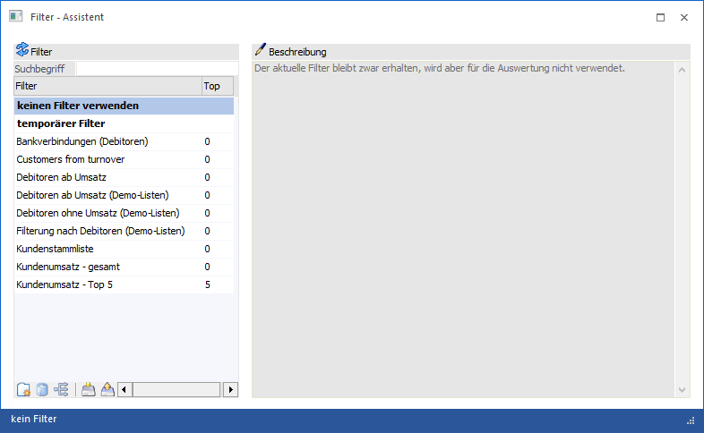
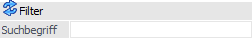
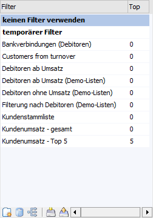
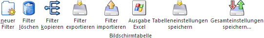
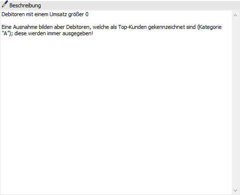

In dem ersten Bereich des Assistenten kann gesteuert werden, was getan werden soll. Hierbei stehen die folgenden Aktionen zur Verfügung:
ü Temporären Filter anlege
ü Neuen Filter anlegen
ü Bestehenden Filter bearbeiten
ü Bestehenden Filter löschen
ü Filter ex- und importieren

Filter

Ø Suchbegriff
Im Feld "Suchbegriff" kann nach bereits bestehenden Filtern gesucht werden. D.h. durch Eingabe eines Filternamens bzw. eines Teiles des Namens und Bestätigung dieses Eintrages werden in der Filtertabelle nur mehr jene Filter angezeigt, die dem Suchkriterium entsprechen.
Tabelle "Filterauswahl"

In der Tabelle werden alle angelegten Filter dargestellt.
Ø Filter
In der Spalte "Filter" wird der Name der Filter angezeigt. Hierbei gibt es grundsätzlich immer die folgenden Einträge:
ü keinen Filter verwenden
Wird
diese Zeile angewählt und danach der Button "Ok" angeklickt, dann wird ein
eventuell ausgewählter oder aktivierter Filter ausgeschalten - d.h. die
Auswertung wird ohne Filterfunktion durchgeführt.
ü temporärer Filter
Wird diese
Zeile gewählt und danach der Button "Vor" angewählt bzw. ein Doppelklick
durchgeführt, dann wird zwar in weiterer Folge ein Filter definiert, dieser aber
nicht gespeichert. D.h. der Filter wird, nachdem der entsprechende Menüpunkt
geschlossen wird, wieder gelöscht.
Achtung
Eine nachträgliche Änderung des Filternamens ist nicht möglich.
Ø Top
Mit Eingabe einer Zahl an dieser Stelle kann definiert werden, wie viele Zeilen max. auf einer Liste ausgewiesen werden sollen. Diese Einstellung steht in den Filtern einer Auswertung in WinLine LIST (bis auf den Kalender) zur Verfügung.
Tabellenbuttons

Ø neuer Filter
Durch Anklicken des Buttons "neuer Filter" können neue Filter angelegt werden. In diesem Fall wird eine neue Zeile in der Tabelle erzeugt, wo anschließend der Name des Filters eingegeben werden kann. Die Definition für die Selektionen und Sortierungen können in den nächsten Bereichen (Button "Vor") festgelegt werden.
Hinweis
Die Bezeichnung des Filters darf keine Sonderzeichen enthalten und kann nachträglich nicht mehr geändert werden!
Ø Filter löschen
Durch Anklicken des Buttons "Filter löschen" können bestehende Filter wieder gelöscht werden. Die beiden ersten Einträge in der Liste ("keinen Filter verwenden" und "temporärer Filter") können nicht gelöscht werden.
Ø Filter kopieren
Durch Anklicken des Buttons "Filter kopieren" wird der gerade aktive Filter kopiert, wobei eine neue Zeile angelegt wird, in welcher der neue Name eingetragen werden muss. Es werden alle Bedingungen und Sortierungen des Filters übernommen.
Ø Filter exportieren
Mit Hilfe dieses Buttons kann der ausgewählte Filter mit all seinen Einstellungen exportiert werden.
Ø Filter importieren
Über den Button "Filter importieren" kann ein zuvor exportierter Filter wieder importiert werden. Abhängig davon, ob es den Filter bereits in der WinLine gibt (inkl. Prüfung der Objektberechtigungen), sind folgende Aktionen möglich:
ü Filter existiert bereits in der
WinLine
Wenn der Filter bearbeitet werden darf, so wird ein Überschreiben
oder eine Neuanlage angeboten. Andernfalls kann nur eine Neuanlage erfolgen.
ü Filter existiert nicht in der
WinLine
Es wird die Neuanlage des Filters angeboten.
Hinweis
Um eine hohe Flexibilität zu gewährleisten kann jeder Filter, unabhängig vom Ausgangsfenster, im Assistenten importiert werden. Die Anzeige des importierten Filters erfolgt hingegen in Abhängigkeit des Ausgangsfensters.
Ø Ausgabe Excel
Durch Anwahl des Buttons "Ausgabe Excel" wird der Inhalt der Tabelle an Microsoft Excel übergeben.
Ø Tabelleneinstellungen speichern
Die Spalten einer Tabelle können grundsätzlich an beliebige Positionen verschoben, bzw. in der Breite entsprechend angepasst werden. Durch Anwahl des Buttons "Tabelleneinstellungen speichern" werden die Einstellungen benutzerspezifisch gespeichert und bei dem nächsten Aufruf des Programmpunktes wieder vorgeschlagen.
Ø Gesamteinstellungen speichern
Im Gegensatz zu "Tabelleneinstellungen speichern" können mit "Gesamteinstellungen speichern" mehrere Tabellenaufbauten gespeichert und nach Wunsch geladen werden. Zusätzlich werden Sonderfunktionen der Tabelle (z.B. "Spalte gruppieren") ebenfalls bei der Speicherung bedacht.
Beschreibung

Rechts neben der Filtertabelle steht ein Notizfeld zur Verfügung, in welches individuelle Bemerkungen zu jedem Filter hinterlegt werden können.